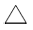
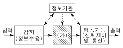
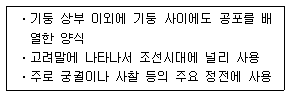
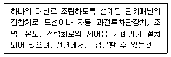

1과목: 실내디자인론
1. 공간의 분할 방법은 차단적 구획, 심리 ㆍ 도덕적 구획, 지각적 구획으로 구분할 수 있다. 다음 중 지각적 구획에 속하는 것은?
2. 창문 전체를 커튼으로 처리하지 않고 반 정도만 친 형태를 갖는 커튼의 종류는?
3. 한국의 전통가구 중 반닫이에 관한 설명으로 옳지 않은 것은?
4. 고대 그리스 신전 건축에서 사용된 착시 보정 방법으로 옳지 않은 것은?
5. 다음 중 기능분석 내용을 바탕으로 하여 구성요소의 배치(lay-out)를 행할 때 고려해야 할 내용과 가장 거리가 먼 것은?
6. 건축화조명 중 코브(cove) 조명에 관한 설명으로 옳은 것은?
7. 상품의 유효진열범위로서 골든 스페이스(golden space)라고 불리는 높이는?
8. 실내공간의 형태에 관한 설명으로 옳지 않은 것은?
9. 상업공간의 설계 시 고려되는 고객의 구매심리(AIDMA)에 속하지 않는 것은?
10. 휴먼 스케일에 관한 설명으로 옳지 않은 것은?
11. 상점의 진열대 배치형식 중 직렬배치형에 관한 설명으로 옳은 것은?
12. 조화에 관한 설명으로 옳은 것은?
13. 균형(Balance)의 원리에 관한 설명으로 옳지 않은 것은?
14. 형태의 지각심리 중 불완전한 형이나 그룹을 완전한 하나의 형 혹은 그룹으로 완성하여 지각한다는 법칙을 의미하는 것은?
15. VMD(visual merchandising)의 구성에 속하지 않는 것은?
16. 실내 디자인의 목표에 대한 설명 중 틀린 것은?
17. 은행의 실내계획에 관한 설명으로 옳지 않은 것은?
18. 전시공간의 순회 유형 중 연속순회형식에 관한 설명으로 옳지 않은 것은?
19. 디자인 요소로서 선에 관한 설명으로 옳지 않은 것은?
20. 브라인드(blind)에 관한 설명으로 옳지 않은 것은?
2과목: 색채학
21. 안전색채 사용에 대한 설명이 틀린 것은?
22. 보색의 색광을 혼합한 결과는?
23. 컬러TV의 브라운관 형광면에는 적(Red), 녹(Green), 청(Blue)색들이 발광하는 미소한 형광 물체에 의하여 혼색된다. 이러한 혼색방법은?
24. 색의 3속성 중 명도의 의미는?
25. 주택의 색채계획에 관한 설명 중 가장 타당한 것은?
26. 표면 지각이나 용적 지각이 없는 색으로 구름 한 점없이 맑고 푸른 하늘을 볼 때의 느낌처럼 순수하게 색만이 보이는 상태를 말하는 것은?
27. 다음 중 색료를 혼합하여 만들 수 없는 색은?
28. 다음 중 ‘박하색’ 과 관련이 없는 이름이나 기호는 무엇인가?
29. 디지털 색채체계의 유형 중 설명이 틀린 것은?
30. 색을 띤 그림자라는 의미로 주변색의 보색이 중심에 있는 색에 겹쳐져 보이는 현상은?
31. 이웃한 색이 서로 인접한 부근에서 더 강한 대비가 느껴지는 현상은?
32. 오스트발트 색채 조화의 설명으로 틀린 것은?
33. 복잡한 가운데 질서의 요소를 미(美)의 기준으로 보고, 색의 3속성을 고려한 독자적인 색공간을 가정하여 조화관계를 주장한 사람은?
34. 다음 중 동일색상의 배색은?
35. 7YR에 대한 설명으로 옳은 것은?
36. 태양 빛과 형광등에서 다르게 보이는 물체색이 시간이 지나면 같은 색으로 느껴지는 현상은?
37. 잔상에 대한 설명 중 옳은 것은?
38. 다음 색채배색 중 신맛의 느낌을 수반하는 배색은?
39. 다음 중 색조를 표현한 것은?
40. 다음 중 추상체와 간상체에 대한 설명이 틀린 것은?
3과목: 인간공학
41. 다음 중 EMG(electromyography)를 이용하여 측정하는 것은?
42. 다음 중 표지판과 등록상표, 기계 등에 쓰이는 활자체에 대한 설명으로 적절하지 않은 것은?
43. 다음 중 전신진동에 의한 신체적 영향으로 틀린 것은?
44. 다음 중 안전색과 그 일반적인 의미의 사용 예가 바르게 짝지어진 것은?
45. 다음 중 시각표시장치의 가독성에 영향을 미치는 요소와 가장 관계가 적은 것은?
46. 다음 중 짐을 나르는 방법에 따른 에너지(산소소비량)가 가장 높은 것은?
47. 다음 중 진동이 인간의 성능에 미치는 일반적인 영향에 관한 설명으로 틀린 것은?
48. 다음 중 신체 관절운동에 관한 설명으로 옳은 것은?
49. 다음 중 시각의 특질에 관한 설명으로 옳은 것은?
50. 다음 중 기초대사량에 관한 설명으로 가장 적절한것은?
51. 다음 중 가장 많은 힘을 낼 수 있는 손잡이의 위치는?
52. 다음 중 실내에서 반사율이 가장 낮아야 하는 곳은?
53. 다음 중 단위면적당 표면에서 반사 또는 송출되는 광량을 무엇이라 하는가?
54. 카츠(Kats)에 의한“촉각에 의한 체험의 분류”중 물체와 손 사이에 끼워진 두께의 느낌을 가지게 하는 것은?
55. 다음 중 망막위치에서 전시위치의 최대 범위를 가장 올바르게 나타낸 것은?
56. 다음 중 손잡이에 대한 일반적인 설명으로 옳은 것은?
57. 다음 중 청각에 관한 설명으로 옳은 것은?
58. 다음 중 픽토그램(pictogram)에 해당하는 것은?

59. [그림]과 같은 인간-기계 통합체계를 컴퓨터시스템과 비교할 때 빗금 친 (가)부분에 해당하는 것으로 옳은 것은?

60. 다음 중 시각 현상의 특성과 가장 관계가 적은 것 은?
4과목: 건축재료
61. 다음 각 석재에 대한 설명 중 옳지 않은 것은?
62. 단열재료에 대한 설명 중 옳지 않은 것은?
63. 목재 방부제 중 방부성은 좋으나 목질부를 약화시켜 전기전도율이 증가되고 비내구성인 수용성 방부제는?
64. 시멘트의 발열량을 저감시킬 목적으로 제조한 시멘트로 수축이 작고 화학저항성이 일반적으로 크며 주로 매스콘크리트용으로 사용되는 것은?
65. 콘크리트 슬럼프 시험(Slump test)의 목적은?
66. 목재의 건조방법 중 인공건조에 해당되지 않는 것은?
67. 연강 철선을 전기 용접하여 정방형 또는 장방형으로 만든 것으로 블록을 쌓을 때나 보호 콘크리트를 타설할 때 사용하며 균열을 방지하고 교차 부분을 보강하기 위해 사용하는 금속제품은?
68. 합금에 대한 설명으로 옳지 않은 것은?
69. 유리의 풍화작용에 영향을 미치지 않는 요소는?
70. 경석고 플라스터에 대한 설명으로 옳지 않은 것은?
71. 표면의 청록색을 띠고 있으며, 건축장식철물 또는 미술공예품으로 이용되는 금속은?
72. 강재의 응력-변형률 곡선에서 항복비란 황복점과 무엇에 대한 비율을 의미하는가?
73. 팽창시멘트의 용도에 해당되지 않는 것은?
74. 목재의 절대건조비중이 0.3일 때 이 목재의 공극률은?
75. 다음 미장재료의 경화과정별 분류로 옳지 않은 것은?
76. 연질타일계 바닥재에 대한 설명 중 옳지 않은 것은?
77. 시멘트에 관한 서명으로 옳지 않은 것은?
78. 다음 각 도료에 관한 설명으로 옳지 않은 것은?
79. 액체상태나 용융상태의 수지에 경화제를 넣어 사용하며 내산, 내알칼리성 등이 우수하여 콘크리트, 항공기, 기계부품 등의 접착에 사용되는 만능형 접착제는?
80. 건축용 세라믹 재료의 특성에 대한 설명으로 옳지 않은 것은?
5과목: 건축일반
81. 소방시설 중 경보시설의 종류에 해당하지 않는 것은?
82. 옥내소화전설비를 설치하여야 할 특정소방대상물의 연면적 기준으로 옳은 것은?
83. 목재로 대형 무지주 지붕을 설치하고자 한다. 구조적으로 가장 적합하지 않은 시공 방법은?
84. 건축법 시행령에서 노유자시설 중 아동관련시설 또는 노인복지시설과 판매시설 중 도매시장 또는 소매시장을 같은 건축물 안에 함께 설치할 수 없도록 한 이유는?
85. 상업지역 및 주거지역에서 건축물에 설치하는 냉방시설 및 환기시설의 배기구는 도로면으로부터 몇 m 이상의 높이에 설치해야 하는가?
86. 국토교통부령으로 정하는 기준에 따라 건축물로부터 바깥쪽으로 나가는 출구를 설치해야 하는 대상이 아닌 것은?
87. 내화구조의 성능기준에 따른 건축물 구성부재의 품질 시험을 실시할 경우 내화시간기준이 가장 낮은 구성부재는? (단, 주거시설의 경우)
88. 유사한 소방시설로 분류되어 설치가 면제되는 기준으로 옳게 연결된 것은?
89. 지표면으로부터 건축물의 지붕틀 또는 이와 유사한 수평재를 지지하는 벽 ㆍ 깔도리 또는 기둥의 상단까지의 높이를 무엇이라 하는가?
90. 철골구조 용접에서 금속이 녹아들 때 생기는 기포나 작은 틈을 의미하는 것은?
91. 경량 철골조의 특성에 대한 설명으로 틀린 것은?
92. 건축허가 등을 함에 있어 소방본부장 또는 소방서장의 동의를 요하는 건축물은 연면적이 최소 얼마 이상이어야 하는가?
93. 벽이 내화구조가 되기 위한 기준으로 틀린 것은?
94. 조선시대 가구 중 장과 더불어 가장 일반적으로 쓰이던 수납용 가구로, 외관상 장과 비슷하나 같은 모양의 상자를 2개 또는 3개의 상자를 쌓아 놓은 형태로 몸통이 따로 분리되는 가구는?
95. 건축물의 구조기준 등에 관한 규칙 중 소규모 건축물의 구조기준에 따른 조적식구조에 대한 기준으로 틀린 것은?
96. 비상경보설비를 설치하여야 할 특정소방대상물의 연면적 기준은? (단, 지하가 중 터널 또는 사람이 거주하지 않거나 벽이 없는 축사는 제외)
97. 다음 건축물 중 주요구조부를 내화구조로 하여야 하는 최소바닥면적의 합계 기준이 가장 큰 것은? (단, 연면적 50m2를 넘는 2층 이상 건축물에 한한다.)
98. 대통령령으로 정하는 방염성능기준 이상의 성능을 보유해야하는 방염대상물품에 해당되지 않는 것은?
99. 다음과 같은 특징을 갖는 한국전통건축의 공포 양식은?

100. 중세의 건축양식이 시대순으로 바르게 나열된 것은?
6과목: 건축환경
101. 총광속이 2000[lm]인 구형 점광원으로부터 수직방향으로 2ｍ 떨어진 지점의 조도는?
102. 음의 잔향시간에 관한 설명으로 옳지 않은 것은?
103. 열용량에 관한 설명으로 옳지 않은 것은?
104. 다음 중 음의 크기 레벨의 단위는?
1⑤. 지구에 도달하는 자외선 가운데 인간의 건강과 깊은 관계가 있으며 건강선이라고도 불리우는 것은?
106. 인체의 신진대사에서 휴식상태에 가장 근접한 Met수는?
107. 복사에 의한 전열에 관한 설명으로 옳은 것은?
108. 공기조화방식 중 팬코일 유닛 방식에 관한 설명으로 옳지 않은 것은?
109. 다음 중 일사차단을 위한 차양설계와 관계없는 요소는?
110. 마스킹(masking)효과에 관한 설명으로 옳은 것은?
111. 다음 중 습공기선도에 표현되어 있지 않은 것은?
112. 주파수가 150Hz이고, 전파속도가 60m/s인 파동의 파장은?
113. 급수방식 중 고가탱크방식에 관한 설명으로 옳지 않은 것은?
114. 겨울철 벽체를 통해 실내에서 실외로 빠져나가는 관류열 부하를 계산할 때 필요하지 않은 요소는?
115. 실내외의 온도차에 의한 공기밀도의 차이가 원동력이 되는 환기 방식은?
116. 표면결로의 방지 대책으로 옳지 않은 것은?
117. 다음 설명에 알맞은 전기설비 관련 장치는?

118. 벽체의 차음성을 높이가 위한 방법으로 옳지 않은 것은?
119. 균일한 1[cd]의 점광원으로부터 방사되는 전 광속은?
120. 환기설비에 관한 설명으로 옳지 않은 것은?